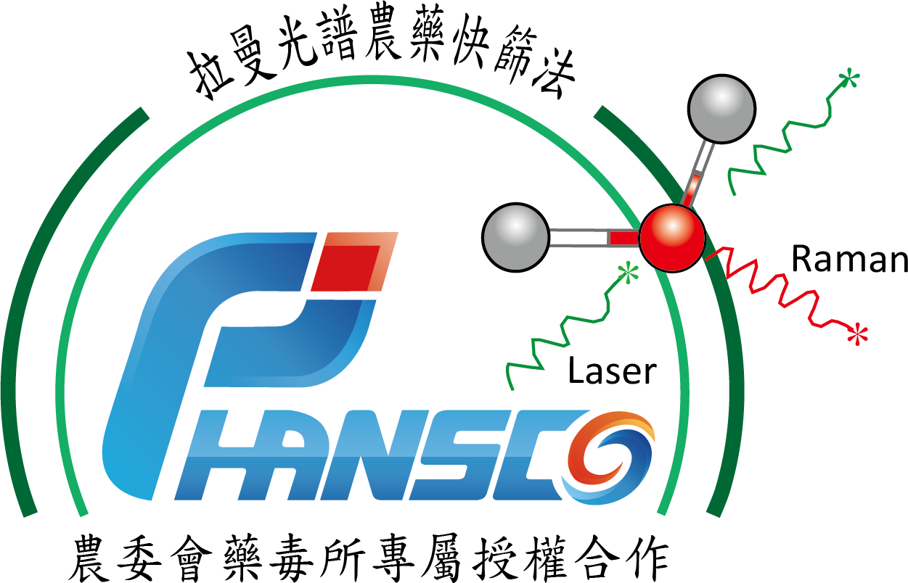

拉曼光譜農藥殘留快速檢驗報告單
樣 品 描 述 ：
柑桔
樣 品 種 類 ：
柑桔類
檢 測 時 間 ：
2020/11/04 下午 03:16:17
檢 測 單 位 ：
汎鍶科藝
樣 品 來 源 ：
大賣場
送 檢 單 位 ：
--
S E R S 圖 譜 比 對 結 果 ：
農藥殘留風險低。 檢出農藥: 柑桔類|含量範圍:<0.5ppm|容許量:0.5ppm
拉 曼 光 譜 篩 檢 ：
通過
註記：
本報告檢驗方法非中央主管機關衛生福利部食品藥物管理署公告食品安全衛生管理法之食品中殘留農藥檢驗方法。
本檢驗方法僅適用於特定之農藥品項及基質,係提供農產品自主管理時參考使用,倘檢驗結果與公告檢驗方法有分歧時, 以衛生福利部食品藥物管理署公告檢驗方法為準。
本次分析結果僅對當日測試之檢驗樣品(檢體)負責。
本報告不得擷錄或宣稱為公告檢驗方法等商業行為及法律證明使用。
拉曼光譜農藥殘留快速檢測技術由農委會農業藥物毒物試驗所專屬技術合作授權 - 藥試技字第1062630032號。
汎鍶科藝拉曼光譜快檢系統量測所得光譜，以雲端農藥正面表列圖譜資料庫進行半定量分析：超出容許值即為不合格。
樣品檢驗執行皆以未經清洗、帶皮或帶殼的蔬果作物進行檢驗蔬果農藥殘留檢驗。
本測試方法為拉曼光譜農藥殘留快速檢驗，依據衛生福利部公告農藥殘留容許量標準為基準。 108年11月6日衛授食字第1081302871號令修正及109年5月20日衛授食字第1091301085號令修正之「農藥殘留容許量標準」進行判定。